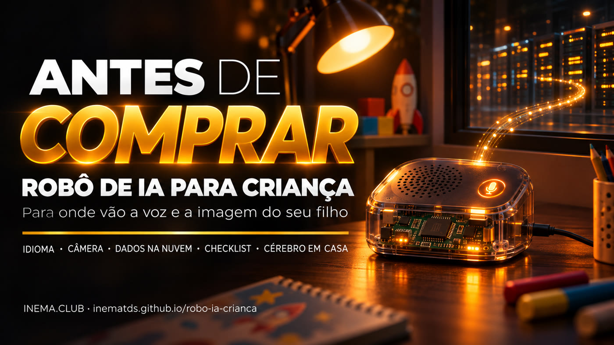

Ele parece um brinquedo. Por dentro, é um microfone ligado à internet que manda a voz do seu filho para um servidor do outro lado do mundo.

Este guia explica os robôs de IA baratos para criança que aparecem nos marketplaces brasileiros. Eles não têm inteligência dentro: gravam a voz (e, em alguns modelos, a imagem) e mandam pela internet para serviços de IA na China, que respondem em voz. Aqui você vê os riscos, um checklist para usar antes de comprar, os cuidados se já comprou e um caminho, ainda a testar, para que o "cérebro" rode no seu próprio computador. Não precisa saber nada de tecnologia: é só ler.
O projeto explicado em poucos minutos.
Levantamos em 07/11/2026 anúncios de robôs de IA infantis num grande marketplace brasileiro. Apareceram dois tipos. O que segue é o que os próprios anúncios dizem.
Visual de robô de desenho, com fone de ouvido e olhos de LED. A arte do anúncio, em inglês, promete "conversa com IA para crianças de 3 a 12 anos", em mandarim, inglês e cantonês, com "acesso a 4 grandes modelos de IA": Doubao, DeepSeek, Wenxin (Baidu) e Tongyi Qianwen (Alibaba). E traz a etiqueta "Overseas Version".
Pequeno, em formato de saquinho de feijão. O anúncio diz que é "alimentado pelo motor DeepSeek AI com visão de máquina": você mostra um objeto e ele diz o que é e explica.
Separamos o que é provável (o que o hardware e os anúncios indicam) do que está confirmado (projetos públicos que dá para conferir). Ainda não abrimos nenhum desses robôs.
Uma plaquinha do tipo ESP32-S3 com microfone, alto-falante e uma telinha que faz os "olhos", rodando o ecossistema aberto chamado XiaoZhi. A placa só grava, envia e toca a resposta. Placas desse tipo são vendidas avulsas por US$ 8 a 18 (exemplo: SpotPear AI-BOX). Só confirmamos abrindo o robô.
Existe um servidor aberto, o xiaozhi-esp32-server (licença MIT), que você instala em casa. Ele aceita modelos locais pelo Ollama, reconhecimento de voz local (FunASR, Sherpa) e várias vozes sintéticas. Há também o OpenToys, com ESP32-S3 e Whisper rodando no computador (foco em Mac com chip Apple).
Doubao é da ByteDance, a dona do TikTok. Wenxin é da Baidu e Tongyi Qianwen, da Alibaba.
Não é para entrar em pânico. É para saber o que você está colocando no quarto do seu filho.
O anúncio do robô "mecha" cita só mandarim, inglês e cantonês; o do Bean Bun não diz o idioma. Para uma criança que ainda está aprendendo a falar, isso limita muito o uso e aumenta a chance de mal-entendido.
A voz da criança vai para servidores na China. Nos modelos com câmera, podem ir também imagens de dentro de casa e do rosto dela. Não há política de privacidade clara em português, então você não sabe por quanto tempo isso fica guardado, se é usado para treinar a IA nem quem pode acessar. No Brasil, dados de criança têm proteção especial na LGPD (a lei de proteção de dados) e no ECA (Estatuto da Criança e do Adolescente).
Se o serviço mudar, cobrar ou desligar, o robô vira peso de papel. Você não controla nada disso.
Os modelos de IA por trás não foram feitos para criança brasileira. Não sabemos que filtros o fabricante aplica, se aplica algum.
apps de brinquedos de IA analisados tinham rastreadores de terceiros e pediam permissões além do necessário (Cybernews).
empresas de brinquedos de IA registradas na China até outubro de 2025, e testes com respostas inseguras para criança (WIRED).
A Mozilla, no guia "Privacy Not Included", recomenda ler a política de privacidade de qualquer aparelho conectado antes de comprar.
Fontes: reportagem da Cybernews sobre apps de brinquedos de IA, reportagem da WIRED sobre brinquedos de IA na China (dado até outubro de 2025) e o guia "Privacy Not Included" da Mozilla. Para conferir, busque o nome da fonte junto com "AI toys".
O problema não é o objeto. É deixar a criança sozinha com ele, ligado à internet, sem saber para onde vão os dados.
Como ele fala inglês, pode ser um parceiro de conversa para praticar, com um adulto ao lado e por pouco tempo.
Abrir, entender a placa e trocar o cérebro por um que roda em casa é um ótimo projeto de eletrônica e IA para fazer junto com um adolescente.
Se o vendedor não souber responder, isso já é uma resposta. Versão para imprimir: docs/checklist.md.
Nenhum deles exige conhecimento técnico.
Ligue o robô na rede Wi-Fi de convidados do roteador, separada dos seus computadores e celulares. Procure "Rede de convidados" ou "Guest" no aplicativo ou na página do roteador; se não achar, peça para a operadora de internet ativar.
Se tiver câmera, tape com um pedaço de fita isolante preta ou desligue nas configurações.
Não deixe o robô no quarto da criança na hora de dormir.
Use só com um adulto no mesmo ambiente.
Ensine a criança a não dizer nome completo, escola nem endereço para o robô.
No celular, confira o que o app pode acessar (localização, contatos, fotos) e tire o que não for necessário.
Quando não estiver em uso, desligue da tomada ou tire a bateria.
Esta parte é para adolescente ou adulto com alguma experiência em eletrônica; se não é o seu caso, pode pular. A ideia: manter o corpo barato do robô e trocar o cérebro da nuvem por um que roda num computador da sua casa. Roteiro técnico completo: docs/cerebro-local.md.
Tire os parafusos (alguns modelos são colados ou de encaixe), abra com cuidado e procure a inscrição "ESP32-S3" no chip metálico da placa. Fotografe a placa. Se for outro chip, este roteiro não serve.
Instale o xiaozhi-esp32-server num PC (o projeto recomenda 4 núcleos e 8 GB de memória) seguindo o README dele, que tem versão em português. Configure tudo local: voz para texto com FunASR ou Whisper, o modelo de linguagem pelo Ollama e uma voz sintética em português.
# código do servidor (instalação: siga o README do projeto) git clone https://github.com/xinnan-tech/xiaozhi-esp32-server.git
Atenção: a configuração "gratuita" que vem pronta no projeto usa serviços de nuvem para o modelo e para a voz. Para nada sair de casa, troque cada peça por uma local. E não use o servidor público de teste citado no README do projeto: ele recebe o áudio de quem se conecta.
Ligar a placa no PC pelo cabo USB, guardar uma cópia do programa original e gravar o firmware XiaoZhi configurado com o endereço do seu servidor, em vez do servidor do fabricante. Como gravar e onde pôr o endereço está no README do firmware; os detalhes que formos descobrindo no teste vão para o roteiro técnico.
# firmware aberto do ecossistema XiaoZhi git clone https://github.com/78/xiaozhi-esp32.git
Bloqueie no roteador o acesso do robô à internet, deixando só a rede de casa. Se ele continuar respondendo em português, o cérebro está mesmo em casa.
Uma aula de 30 minutos para crianças de 6 a 12 anos. Não precisa de robô, de internet nem de saber IA. O tom é de curiosidade, não de medo: a criança aprende que ela escolhe o que conta.
"Quando você fala com um robô, para onde vai a sua voz?" A turma responde e você anota no quadro, sem corrigir ainda.
Uma criança é o robô, outra é a "empresa lá longe", ligadas por um barbante. A frase dita ao robô chega do outro lado da sala. Todo mundo vê que a voz saiu dali.
Fala português? Funciona sem internet? Não tem câmera? Leitura do cartaz e folha de atividade: desenhar o caminho da voz e marcar o que não se conta.
Para robô não se conta nome completo, escola, endereço nem senha. Robô fora do quarto à noite. Pergunta estranha? Chamar um adulto. Bilhete vai para casa.
Um script que mostra para onde o robô manda dados, quanto manda e em que minutos, inclusive quando ninguém está falando com ele. Roda num notebook Linux, sem conta e sem serviço externo. Quem não tem isso pode olhar o app do roteador, que costuma mostrar o consumo de dados por aparelho.
O script liga uma rede chamada ROBO-VIGIA no notebook. No app do robô, troque a Wi-Fi dele para essa rede: assim todo o tráfego passa pelo notebook. Antes, ligue o notebook na internet por cabo (a placa Wi-Fi vira a rede do robô) e instale o tcpdump (sudo apt install tcpdump).
git clone https://github.com/inematds/robo-ia-crianca.git cd robo-ia-crianca/vigia ./hotspot.sh --ligar ./hotspot.sh --clientes # mostra o endereço do robô, ex.: 10.42.0.50
Deixe rodando durante o uso normal. Faça também o teste do silêncio: 10 minutos com o robô ligado e ninguém falando.
sudo python3 vigia_robo.py --iface <placa> --ip 10.42.0.50 --saida relatorio.md
A tabela mostra cada destino com o nome, a empresa, o país da empresa e quanto foi enviado. O gráfico minuto a minuto mostra se ele manda dados sozinho. O vigia vê o caminho e o tamanho, não o conteúdo: a voz vai criptografada.
# trecho do relatório de EXEMPLO (captura inventada, não é medição de um robô)
| api.tenclass.net | servidor público do XiaoZhi | China (provável) | 145.7 KB |
| ark.cn-beijing.volces.com | ByteDance / Volcengine (Doubao) | China | 3.1 KB |
| 198.51.100.77 | não identificado (endereço fixo)| ? | 2.3 KB |
vigia/teste.sh). O hotspot e a captura ao vivo com um robô de verdade ainda serão testados com o Bean Bun. Detalhes: vigia/.Quando a conversa passa pelo servidor da família (o cérebro em casa, acima), os pais passam a mandar nela. Num robô ligado à nuvem do fabricante, nada disto é possível. Planejado, ainda não construído: depende de o cérebro em casa funcionar.
O texto de cada pergunta e resposta, guardado só no computador de casa.
Fora do horário, o robô responde "agora é hora de descansar".
Minutos de conversa por dia, como já existe para tela.
Tema bloqueado vira "pergunte a um adulto".
Endereço, senha, "segredo" ou tristeza repetida geram aviso no celular.
Uma página no celular dos pais corta o cérebro com um toque.
Tempo de uso, assuntos mais falados e alertas.
Um botão apaga o histórico. O dado é da família.
Ordem: comprar e abrir um Bean Bun → cérebro em casa com a rede bloqueada → medir com o vigia que nada sai → montar o painel, começando pelo histórico. Roadmap completo: ROADMAP.md.
Só o que os anúncios e os projetos dizem. Não temos o preço em reais desses robôs, então não colocamos. No celular, arraste a tabela para o lado.
| Robô "mecha" | Bean Bun | Robô com cérebro local | |
|---|---|---|---|
| Idioma | Mandarim, inglês, cantonês | Não informado no anúncio | Português, se o roteiro funcionar (a testar) |
| Câmera | Só na versão vermelha quadrada | Sim ("visão de máquina") | Depende da placa; você decide se usa |
| Para onde vão os dados | Nuvem de serviços chineses (Doubao, DeepSeek e outros) | Nuvem (motor DeepSeek) | Ficam no computador da sua casa |
| Precisa de internet | Sim | Sim | Não; só a rede Wi-Fi de casa |
| Custo | Barato (preço não confirmado) | Barato (preço não confirmado) | O robô + um computador que você já tenha; placas avulsas de US$ 8 a 18 |
O robô é a ponta de um movimento maior: o hardware virou peça barata, e o que vale é quem processa e guarda o que você diz.
Plaud NotePin S e Plaud One, com agente por voz: gravam e mandam para a nuvem resumir.
A Amazon comprou a Bee. A Meta comprou a Limitless em dezembro de 2025.
O anel Stream, da Sandbar, e o aparelho sem tela da OpenAI com Jony Ive, adiado para 2027.
Lançamentos e compras noticiados entre 2025 e novembro de 2026.
Computadores de uma empresa, em outro lugar, que recebem e processam o que o aparelho manda pela internet.
Um chip barato com Wi-Fi, usado em muitos aparelhos conectados. É o "corpo eletrônico" provável desses robôs.
O programa gravado dentro da placa. Ele decide para qual servidor o robô manda a voz.
O computador que recebe a voz e devolve a resposta. Pode ser da empresa (na nuvem) ou seu (em casa).
Programa gratuito que roda modelos de IA no seu próprio computador, sem internet.
Programas que transformam fala em texto. Rodam no computador de casa.
Programa que transforma texto em fala: é a "voz" do robô.
Licença de código aberto: qualquer um pode usar, estudar e modificar.
Quem gosta de montar, abrir e modificar aparelhos por conta própria.